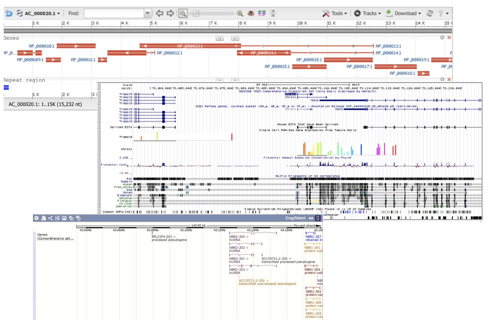
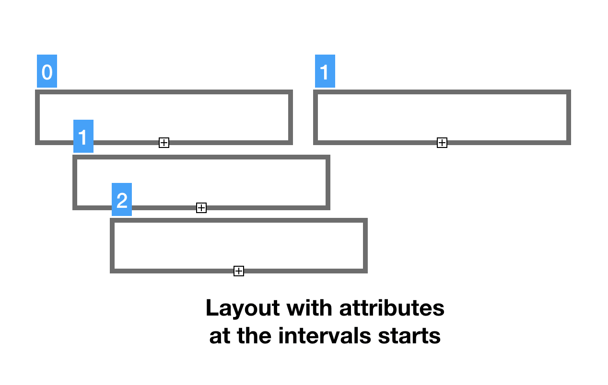
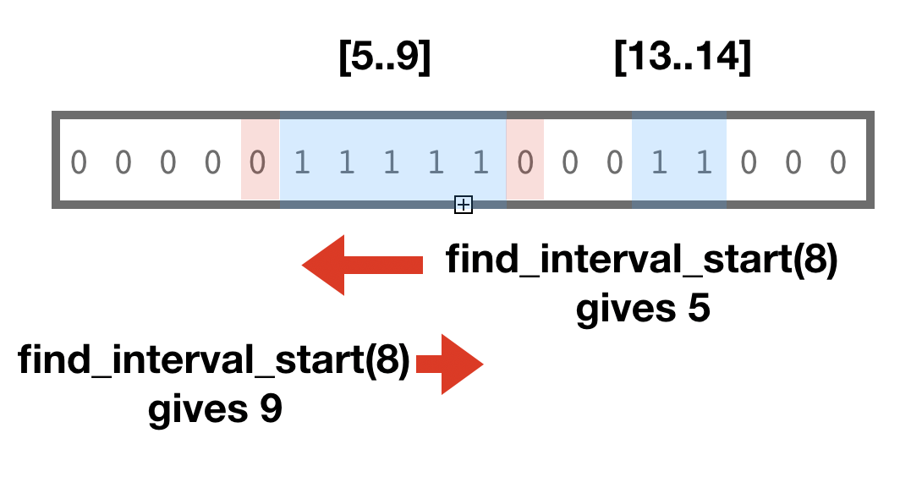
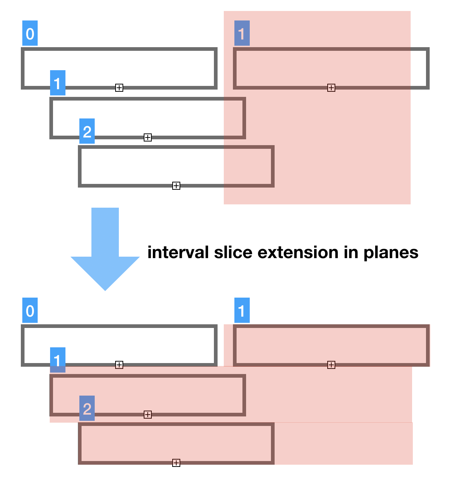

Genomics layouts with bit-intervals and succinct data structures
Anatoliy Kuznetsov, March 16, 2020Introduction
This use case discusses use of BitMagic bit-vectors and succinct containers for building a layout model for genetic data as memory compact structure. BitMagic library provides an array of functions and algorithms for range and interval interpretation of bit-vectors. This use case is to explore this APIs to compute data layout using bit-vectors as collections of non-overlapping intervals, add attributes using Rank-Select succinct vector. To better illustrate thye case we create a toy visualization using ASCII graphics.
Layout calculation

Many genomics viewers employ horizontally stacked layout of genomic annotations (features), which displays features in genome coordinate space. Horizontally stacked layout arranges features in non-overlapping layers of coverage. Total number of necessary layers is sometimes called “depth of coverage”.

It is possible to use conventional data structures to calculate the graphical layouts, but in this study we explore options based on bit-vectors based on interpretation of bit-vectors as non-overlapping intervals of 1s.
Bit-vector based layout calculation algorithm uses
bm::bvector<>::any_range(from, to) method to detect and find an empty spot in a
coverage plane. In this model each plane is an independent bit-vector, and feature markup area is
represented as a block of consecutive 1s, flanked with 0s like “011110” (interval).
BitMagic keeps bit-vector blocks of such pattern structure using GAP representation,
and uses Binary Interpolative Encoding (Moffat) to compress and serialize vectors.
This representation is memory efficient and easy to interpret using bm::interval_enumerator<>
Beyond layout

Just having the layout (genomic coordinates) is not enough for a viable model. Lets add a feature strand characteristic to the mix here. If we are modeling DNA, which has two strands, we would need to know if feature stand is positive or negative/complementary or unknown (possible corner case). We use numeric codes (0, 1, 2) for feature stand indicators. It would be convenient to have our strand properties on the same planes in the same genomic coordinates as our features. It is possible to create yet another pair of bit-vectors to mark-up features, but there is a better method. We can assign strand indicator to the feature start coordinate and use Rank-Select compressed containers to handle it.
Code snippet for the succinct data model.
#include "bm.h"
#include "bmintervals.h"
#include "bmsparsevec_compr.h"
...
typedef bm::interval_enumerator<bm::bvector<> > interval_enumerator_type;
typedef std::vector<std::unique_ptr<bm::bvector<> > > layout_vector_type;
typedef bm::sparse_vector<unsigned char, bm::bvector<> > sparse_vector_u8;
typedef bm::rsc_sparse_vector<unsigned char, sparse_vector_u8> rsc_vector_u8;
typedef std::vector<std::unique_ptr<rsc_vector_u8> > starnds_vector_type;
struct data_model
{
void optimize();
void add_layout(size_t plane, bm::bvector<>* bv);
void add_strand(size_t plane, rsc_vector_u8* strand);
layout_vector_type layout_v; ///< layout vector
starnds_vector_type strand_v; ///< strand planes vector
};
Layout calculation code snippet, uses bm::bvector<>::any_range() and
bm::bvector<>::set_range() to encode non-overalpping '011110' intervals
void add_object(data_model& dm, unsigned start, unsigned end,
unsigned char strand)
{
assert(start <= end);
bm::bvector<>* bv; // layout plane vector
for (size_t i = 0; i < dm.layout_v.size(); ++i)
{
bv = dm.layout_v[i].get();
if (!bv)
{
bv = new bm::bvector<>(bm::BM_GAP);
dm.layout_v[i] = unique_ptr >(bv);
// bv just created (empty) no need to do range check
bv->set_range(start, end);
set_feature_strand(dm, i, start, strand);
return;
}
if (!bv->any_range(start, end)) // check if layout space is not used
{
bv->set_range(start, end); // add [start..end] coordinates
// set strand at the start of feature
set_feature_strand(dm, i, start, strand);
return;
}
} // for i
// not found, make new plane
//
bv = new bm::bvector<>(bm::BM_GAP);
dm.layout_v.emplace_back(std::unique_ptr >(bv));
bv->set_range(start, end);
set_feature_strand(dm, dm.layout_v.size()-1, start, strand);
}
Rank-Select Compression (NULL compression)
Rank-Select Succinct data representation is also known as “NULL values compression”. This is not a truly compression method, it is a succinct method. The terminological difference between compression and succinct is our ability to access the data in compressed form (with some penalty) without decoding the whole data block or compression page.

The idea of Rank-Select or NULL compression is to keep one single presence-absence bit-vector (not NULL vector) representing logical coordinates in the container and not to keep NULL values at all. Bit-vectors define operations of Rank and Select through bit-counting and allow to do address precomputation, so logical-physical address translation is sufficiently fast, especially with assist of a Rank-Select Index (BitMagic has it) and accelerated compute using hardware POPCNT and BMI2 instructions (BitMagic uses it as well).
In the illustration here we show that element with logical coordinate 4 has Rank=1 (POPCNT-1) after we excluded all the NULL values.
In this example we use bm::rsc_sparse_vector<>
we can just use our logical (genomic) coordinates for attributes and avoid memory bloat.
It is both, easy and effcient.
Another aspect of bm::rsc_sparse_vector<> is that it uses
bit-transposed representation for values, so if our value for possible strands uses only 3 bits
because of a maximum of 2 – it will use only 2 bit planes in bit-sliced form plus the address
bit-vector.
This succinct compression trick can be very useful when we have large models or memory
pressure environment (like WebAssembly).
ASCII graphics
Based on our succinct data model lets create a simple toy visualization using ASCII prints. The toy ASCII “renderer” is only a few lines of code, but it illustrates the concept of layered feature layout.
As you can see rendering code uses bm:interval_enumerator<> to re-interpret
bit-vector layout as pairs
of values and reflect strand attributes in pseudo graphics. You can fork the reference code and come up with SVG
rendering algorithm here or use true graphical pipeline withy OpenGL/WebGL.
Exmaple ASCII layout
-------------------------------------------------------------------------
ATGTTAGCCCGCGCATATTATATATGTAGCGTATTAAGCGDGGAGATTACCCTTGCATTAGGTTANNNNNNNN
-------------------------------------------------------------------------
< >....> <....<
<.................................................................<
>.........>
?....?
Snippet of code on for the toy renderer
#include "bm.h"
#include "bmintervals.h"
#include "bmsparsevec_compr.h"
void print_model(const data_model& dm)
{
const bm::bvector<>* bv; // layout
const rsc_vector_u8* strand_plane;
// Sequence on top is for purely decorative purposes
cout <<
"-------------------------------------------------------------------------"
<< endl <<
"ATGTTAGCCCGCGCATATTATATATGTAGCGTATTAAGCGDGGAGATTACCCTTGCATTAGGTTANNNNNNNN"
<< endl <<
"-------------------------------------------------------------------------"
<< endl;
for (size_t i = 0; i < dm.layout_v.size(); ++i)
{
bv = dm.layout_v[i].get();
if (bv)
{
strand_plane = i < dm.strand_v.size() ? dm.strand_v[i].get() : nullptr;
interval_enumerator_type ien(*bv);
if (ien.valid())
{
bm::bvector<>::size_type spaces = 0;
do
{
auto st = ien.start(); auto end = ien.end();
char ch_strand = '?';
if (strand_plane)
{
auto strand = strand_plane->get(st);
switch (strand)
{
case 0: ch_strand = '>'; break; // positive
case 1: ch_strand = '<'; break; // negative
default: break; // unknown strand
}
}
for (; spaces < st; ++spaces)
cout << " ";
for (bool first = true; st <= end; ++st, first = false)
{
if (st == end)
cout << ch_strand;
else
cout << (first ? ch_strand : '.');
} // for
spaces = end+1;
} while (ien.advance());
cout << endl;
}
}
} // for
}
Data Model splicing

Another operation to discuss here is data model splicing. Very often we don’t need the whole genomic model. For example, human Chr1 is 200 million base pairs, plant chromosomes are even longer. That's a lot of data which viewer does not need all at once.Thus we need cut-n-paste.
The most natural splicing is splicing in the domain of sequence coordinate ranges [from..to].
Our succinct model fully supports such range splicing as all the containers support copy_range() method. Copy range preserves the area of interest and does not copy everything outside of it. All vectors are sparse and prepared to handle this case and save memory.

The important aspect of coordinate splicing is that most likely you don’t want to cut your features in halves. If we do that we loose the feature span and we can loose the feature start, which keeps the strand indicator. Not ideal, right?
To address this we should always extend the cut index to the interval boundaries
of features. BitMagic offers bm::find_inetrval_start() and bm::find_interval_end()
Sample output from the coordinate based slicer which adaptively extends coverage layers to feature boundaries. Initial requested range was [5..10] but slicers stretches it in planes crossing the boundaries. This approach can be adapted for cases where you may need to extend left boundarie but cut the right or similar cases.
-------------------------------------------------------------------------
ATGTTAGCCCGCGCATATTATATATGTAGCGTATTAAGCGDGGAGATTACCCTTGCATTAGGTTANNNNNNNN
-------------------------------------------------------------------------
>....>
<.................................................................<
As we see here slicer in this case keeps strand attribute but this is also optional. In complex models with hundreds of data model attributes and parameters you sometimes do not need everything in the desired coordinate space. Typical example would be BAM files with read tags, like quality scores, not neccesarily important for visualization.
Data model based on vectors can be sliced many dimensions, not just coordinate space of genome. In fact you can also drop attributes. This approach is well known in columnar databases, using compressed columns/vectors as analytics engines.
Our example can also do slicing by coordinates and model attributes. Since we decided to keep only one attribute (strand) we can only drop strand. This is not terribly practical to drop stand, but ok for illustration purposes.
-------------------------------------------------------------------------
ATGTTAGCCCGCGCATATTATATATGTAGCGTATTAAGCGDGGAGATTACCCTTGCATTAGGTTANNNNNNNN
-------------------------------------------------------------------------
?....?
?.................................................................?
In this case renderer just shows all features as "Unknown" strand.
Code sample to illustrate interval aware slicing
void splice_model(data_model& dm_target, const data_model& dm,
bm::bvector><::size_type start,
bm::bvector><::size_type end,
bool copy_strands)
{
const bm::bvector<>* bv; // layout
const rsc_vector_u8* strand_plane;
size_t t_plane = 0;
for (size_t i = 0; i < dm.layout_v.size(); ++i)
{
bv = dm.layout_v[i].get();
if (bv)
{
bm::bvector<>::size_type start_pos;
bm::bvector<>::size_type end_pos;
bool found = bm::find_interval_start(*bv, start, start_pos);
if (!found)
start_pos = start;
found = bm::find_interval_end(*bv, end, end_pos);
if (!found)
end_pos = end;
unique_ptr<bm::bvector<>> bv_ptr(new bm::bvector<>(bm::BM_GAP));
bv_ptr->copy_range(*bv, start_pos, end_pos);
if (bv_ptr->any()) // copy range may have ended as empty
{
dm_target.add_layout(t_plane, bv_ptr.release());
// slice the strands plane (if requested)
//
if (copy_strands)
{
if (i < dm.strand_v.size())
{
strand_plane = dm.strand_v[i].get();
if (strand_plane)
{
unique_ptr<rsc_vector_u8> strand_ptr(new rsc_vector_u8());
strand_ptr->copy_range(*strand_plane, start_pos, end_pos);
dm_target.add_strand(t_plane, strand_ptr.release());
}
}
}
++t_plane;
} // if any()
} // if bv
} // for i
}
GitHub
Sources and build instructions are available at xsample08
Conclusions
- This example showed construction of genomic visualization layout models with BitMagic succinct data structures, model slicing and interpretaion (rendering).
- In this case we intentinally avoided serialization of the model (which is totally possible) to keep our example succinct. This example avoids talking on compression ratios which can be achieved using succinct model (it definately deserves a separate study).
- BitMagic library is fast and easy to use. :-)